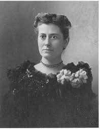
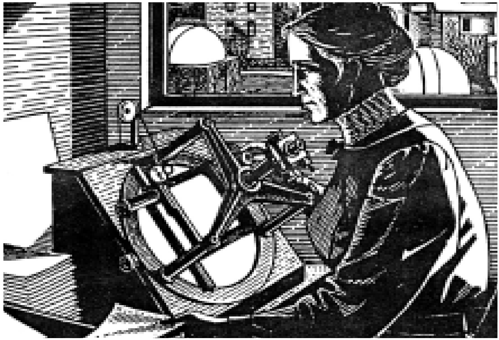
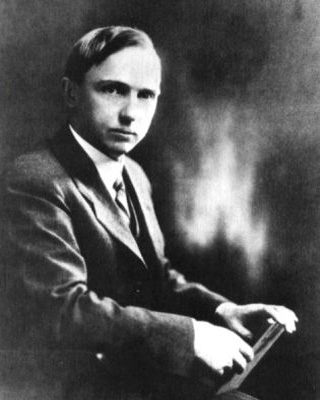
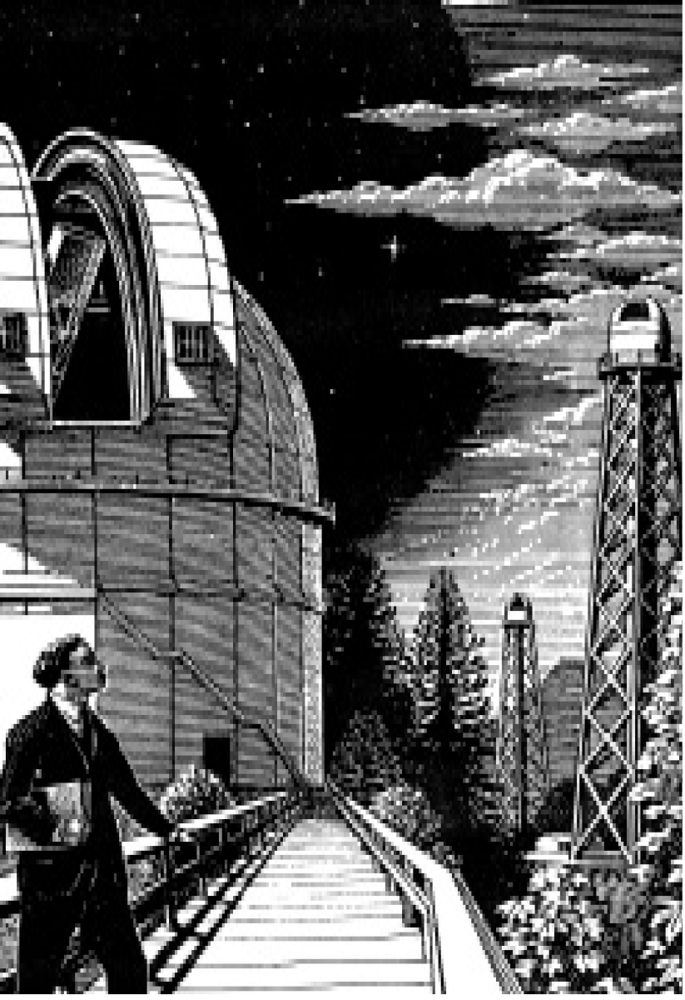
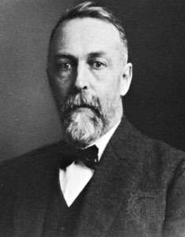

Henrietta & Swan & Leavitt
Mặc chiếc váy dài và chiếc áo khoác cổ cao, bà Henrietta Swan Leavitt(1) ngồi bên bàn làm việc. Qua cửa sổ, bà có thể thấy các tòa nhà thấp phủ cây leo thường xuân và bốn mái vòm nhỏ của đài thiên văn Đại học Harvard. Trên bàn, trước mặt bà là các chồng ảnh chụp và một chiếc kính hiển vi có công suất thấp.

Bà lấy ra một trong số các bức ảnh và đặt nó dưới kính hiển vi. Bức ảnh cho thấy một khối rất lớn phân bố không đồng đều của các sao, đây là khối nhỏ trong hai đám mây Magellan. Cùng với nhau, hai đám mây này trông như các mảnh bị xé ra từ dải Ngân hà. Hai đám mây bụi và sao này, chỉ nhìn thấy từ bầu trời phía nam, đã được chụp ảnh tại Harvard ở Peru.
Giờ đây, bà tra cứu một danh mục đặc biệt của các sao, nó liệt kê 1.777 sao biến quang của hai đám mây này. Bà chăm chú tìm cho tới khi bắt gặp một trong các sao biến quang được liệt kê. Bà ước tính độ sáng của nó, ghi chú thời điểm đã được chụp ảnh. Rồi bà lục tìm trong các ảnh khác cũng sao ấy được chụp ở các thời điểm khác nhau. Mỗi lần tìm ra, bà ghi chú độ sáng của nó và thời điểm đã được chụp ảnh. Rất chậm rãi, bà lập ra một hình vẽ về cách mà ngôi sao khác thường này duy trì chu kỳ mờ nhạt, sáng chói, rồi lại mờ nhạt.
Vài năm trước đó, vào khoảng 1908, một nhà thiên văn khác của đài Harvard tên là Solon I. Bailey đã săn tìm các sao biến quang. Ông phát hiện có nhiều sao rất đáng chú ý trong một số cụm đặc sít gọi là các quần tinh hình cầu. Ông nhận dạng các sao này như là một loại sao đặc biệt: sao biến quang co giãn, chúng nằm trong chòm sao Cepheus (chòm Thiên Vương). Ông thông báo:
- Đa số các sao biến quang co giãn thay đổi rất nhanh. Chúng trải qua trọn một chu kỳ chỉ trong khoảng 12 giờ. Tuy nhiên, có một số dao động chậm hơn, phải mất 12 đến 20 ngày.
Không ai rõ tại sao các sao biến quang co giãn lại nhấp nháy như vậy, cả các nhà thiên văn cũng không biết toàn bộ phạm vi tốc độ nhấp nháy. Bà Leavitt quyết định đo thời gian của các sao này trong hai đám mây Magellan.
Đêm này sang đêm khác, bà kiên nhẫn tìm các sao biến quang co giãn. Vấn đề khó khăn là phần lớn các sao này rất mờ, chúng có độ sáng cấp 15. Phải cần thời gian lộ sáng lâu hơn để chụp ảnh chúng, nhưng nhiều bức ảnh của bà hoàn toàn không cho thấy chúng. Ngoài ra, trong các đám mây co nhiều bụi che khuất, vì vậy bà tập trung vào tiểu tinh vân, ở đấy có phần rõ hơn.

.
Cuối cùng, sau nhiều tháng làm việc miệt mài, bà Leavitt tìm ra vận tốc mà tại đó, 25 trong số 1.777 sao nhấp nháy được lập danh mục. Đa số chúng phải mất từ một ngày đến hai tuần để hoàn tất chu kỳ từ sáng đến mờ rồi sáng trở lại.
Tiếp đến, bà liệt kê các số liệu, sắp xếp các sao theo thứ tự từ độ nhấp nháy nhanh nhất đến chậm nhất. Dọc theo các số liệu, bà cũng ghi chú độ sáng cực đại và cực tiểu của mỗi sao.Sau đó, bà để ý thấy có điều gì đó khiến bà tin chắc rằng mình vấp phải một số bí ẩn của các sao biến quang co giãn: các sao có chu kỳ chậm sáng hơn các sao có chu kỳ nhanh.
Bà hồi hộp vẽ ra một đồ thị để cho thấy độ sáng và tốc độ nhấp nháy có liên quan với nhau như thế nào. Kết quả cho ra là một đường cong suôn sẻ. Điều này chứng tỏ rằng mối liên hệ giữa độ sáng và tốc độ nhấp nháy không phải là sự tình cờ. Tuy nhiên, nó không giải thích đươc tại sao hai đại lượng này có liên quan với nhau.
Năm 1912, Leavitt công bố các kết quả của mình. Mặc dù bà chưa hiểu rõ hết, nhưng chúng đưa ra một cách mới để đo vũ trụ.
HARLOW SHAPLEY
Năm 1914, nhà thiên văn trẻ sinh ở bang Missouri tên là Harlow Shapley(2) đang nghiên cứu tại Đại học Princeton. Chuyên ngành của ông là một loại sao biến

quang khác, ông vừa nhận bằng tiến sĩ do kết quả công trình nghiên cứu của mình.Một hôm, Henry Norris Russel, giám đốc đài thiên văn Princeton, gọi Shapley vào phòng làm việc của ông và nói:
- Hale đang trên đường đến viếng chúng ta từ đài thiên văn Núi Wilson. Ông ấy muốn gặp anh.
Nhà thiên văn trẻ lấy làm xúc động. George Ellery Hale đã gây dựng một số trong những đài thiên văn lớn nhất thế giới.
Trước tiên, ông lập ra đài Yerkes ở Vịnh Willians bang Wisconsin, với kính viễn vọng khúc xạ đường kính 101cm – thuộc loại lớn nhất vào lúc ấy. Sau đó, ông thành lập đài thiên văn trên Núi Wilson, nằm cao trên vùng không khí trong vắt của miền nam bang California.
Khi Hale gặp Shapley, ông nhìn nhà thiên văn trẻ với vẻ gay gắt qua cặp kính và nói nhát gừng:
- Tôi biết về công trình của anh. Tôi muốn anh gia nhập đài thiên văn Núi Wilson.
Đến làm việc ở Núi Wilson có nghĩa là được sử dụng các thiết bị thiên văn tốt nhất thế giới. Shapley không cần phải đợi thêm sự thúc giục nào. Ông thu dọn đồ đạc rồi cùng với vợ là Martha làm một chuyến hành trình dài và chậm. Từ Pasadena, ông đi theo con đường quanh co khúc khuỷu để cuối cùng dẫn lên đỉnh Núi Wilson cách mực nước biển 1.742m. Cũng trên con đường này, chỉ rộng 2,4m các bô phận của kính viễn vọng khúc xạ lớn 152cm đã được vận chuyển rất vất vả bảy năm trước đó.
Khi lên đến đỉnh, ông nín thở trước vẻ đẹp của quang cảnh. Đứng xen kẽ giữa các cây thông là các tháp cao với mái vòm trắng bên trong có đặt kính viễn vọng khúc xạ của Hale. Không khí ở đay trong lành và quang đãng, quang đãng hơn bất cứ nơi nào mà ông thấy trên miền đông nước Mỹ. Ông ngắm nhìn xung quanh, nghĩ đến những đêm quan sát tuyệt diệu lúc trời trong đang chờ phía trước. Đây là một đài thiên văn đẹp như mơ!
Shapley tiếp tục ngiên cứu các sao biến quang, nhưng lần này ông chọn các sao biến quang co giãn. Với kính viễn vọng khúc xạ đường kính 152cm, ông có thể thu được các bức ảnh rõ hơn bất kỳ các bức ảnh nào đã chụp trước đấy. Đặc biệt là ông có thể nghiên cứu quang phổ sao kỹ hơn.

.Cũng như Bailey, ông tập trung vào các sao biến quang co giãn nhấp nháy nhanh trong quần tinh hình cầu. Kính viễn vọng này cho thấy hàng ngàn sao riêng rẽ, mà không một kính viễn vọng nào khác có được. Gương lớn của nó thu nhiều ánh sáng đến mức phải tăng tốc thời gian lộ sáng khi chụp ảnh. Shapley thu được quang phổ của một sao có cấp sáng 8 trong bảy phút và một sao có cấp sáng 10 trong bốn giờ.
Đêm này sang đêm khác, ngay khi cửa mái vòm mở trượt ra, nhà thiên văn trẻ đến bên kính viễn vọng, hướng nó vào các sao và đồng thời chụp ảnh trong nhiều giờ. Ban ngày, ông mải mê nghiên cứu các kết quả.
Chẳng bao lâu, ông để ý đến một hiện tượng kỳ lạ về quang phổ sao biến quang co giãn. Khi một sao biến quang co giãn ở vào độ sáng nhất của nó, các vạch xê dịch hướng về phần xanh dương. Vào lúc sao mờ nhất, các vạch xê dịch hướng về phần đỏ.
Bình thường, các xê dịch quang phổ có nghĩa là sao đang chuyển động tiến tới hoặc lùi xa Trái đất. Xê dịch hướng về phần xanh dương có nghĩa là sao đang tiến tới, xê dịch hướng về phần đỏ có nghĩa là sao đang lùi xa. Nhưng các sao biến quang co giãn dường như có cả hai chuyển đông: trước tiên nó lao tới, rồi sau đó lùi xa. Điều này xem ra không thể được.
Shapley lúng túng trước vấn đề này, rồi ông chợt nảy ra một sáng kiến. Có thể các sao thật ra không chuyển động tới lui, mà bề mặt của chúng chuyển động ra vào. Có thể chúng thường xuyên co lại và giãn nở. Ông lẩm bẩm:
- Các xê dịch quang phổ cũng sẽ như vậy.
Ông hình dung là các khí ở bề mặt của sao sẽ bị dồn ra hoặc dồn vào với vận tốc nhiều km/giây. Một số sao thường thay đổi đường kính của chúng có tới 10% trong vài giờ. Rõ ràng đây là điều vô lý! Thế nhưng, có sự giải thích nào khác cho nó?
Ông xem xét lại vấn đề nhiều lần, tìm sự giải thích khác. Tại bữa ăn trong đài thiên văn, ông đưa ra ý kiến voái cá nhà thiên văn khác như Adam, Seares và Pease. Ý kiến của ông có thể là kỳ quái, nhưng tất cả họ đều đồng ý chắc chắn nó sẽ giải thích được quan sát.
Sau đó, nhà thiên văn kiêm nhà toán học người Anh Arthur Eddington xem xét giả thuyết ấy. Ông có thể tính toán rằng có khả năng xảy ra cho sự phát xung lạ thường này tiếp tục mà bản thân ngôi sao không bị vỡ ra từng mảnh. Ngày nay, các nhà thiên văn biết rằng các sao biến quang co giãn vẫn thực sự phình ra và co lại như thế.
EJNAR HERTZSPRUNG
Trong lúc đó, nhà thiên văn người Đan mạch Ejnar Hertzsprung(3) bắt đầu nghĩ rằng các sao nhấp nháy này có thể được dùng như là những cái chỉ báo.
Các nhà thiên văn hiểu rằng khi biết độ sáng thực của một sao, thì khoảng cách ở xa có thể được xác định bằng cách so sánh độ sáng thực với độ sáng biểu kiến của nó. Bằng định luật bình phương nghịch đảo, lượng ánh sáng đến Trái đất từ bất kỳ sao nào sẽ giảm tỷ lệ đối với bình phương của khoảng cách.
Nghiên cứu phát hiện của bà Leavitt về mối liên quan giữa độ sáng và tốc độ nhấp nháy của sao biến quang co giãn, Hertzsprung thấy rằng tốc độ nhấp nháy của một sao có thể dùng để phát hiện độ sáng thực của nó. Khi biết được độ sáng thực thì dễ dàng hình dung ra khoảng cách ở xa của bất kỳ sao biến quang co giãn đặc biệt nào, bằng cách so sánh lượng ánh sáng mà chúng ta thấy đối với độ sáng thực.

Nhưng làm thế nào Hertzsprung tìm ra độ sáng thực đi cùng với tốc độ nhấp nháy nào đó? Các độ sáng do bà Leavitt ghi chú là các độ sáng biểu kiến được nhìn từ Trái đất, chứ không phải các độ sáng thực.
Phương pháp duy nhất ông có thể nghĩ ra là bắt đầu con đường vòng khác, thu thập độ sáng thực của một số sao biến quang co giãn bằng cách đo khoảng cách tới chúng. Nếu biết được khoảng cách, ông có thể tính toán độ sáng thực bằng định luật bình phương nghịch đảo. Điều này trông như một nghịch lý không thể gải thích được: dùng các sao biến quang co giãn như là những cái chỉ báo khoảng cách, trước hết ông phải biết khoảng cách tới các sao biến quang co giãn.
May thay, trong khó khăn này ông tìm ra một cách. Có một số sao biến quang co giãn ở tương đối gần, Hertzsprung có thể đo khoảng cách tới chúng bằng một phươg pháp khác. Phương pháp này phụ thuộc vào phân tích thống kê về các sao này chuyển động ngang qua bầu trời trong các năm nhiều như thế nào. Tính trung bình, các sao ở gần dường như chuyển động nhiều hơn các sao ở xa.
Thế là Hertzsprung tìm kiếm chuyển động đã được ghi lại của 13 sao biến quang co giãn ở gần và tính khoảng cách của chúng. Rồi ông tính toán độ sáng thực của chúng bằng cách so sánh với độ sáng biểu kiến.
Tất cả các sao biến quang co giãn mà ông đang nghiên cứu đều là các sao có tốc độ nhấp nháy khá chậm, chu kỳ nhấp nháy từ 1,3 đến 66 ngày. Chẳng bao lâu, ông có các số liệu về độ sáng thực mà ông cần. Do các sao biến quang co giãn được bà Leavitt nghiên cứu cũng có các tốc độ nhấp nháy rất giống như thế này, Hertzsprung biết chắc rằng ông có thể gắn các số liệu về độ sáng cho chúng. Điều này có nghĩa là ông có thể tìm ra khoảng cách tới các đám mây Magellan mà bà Leavitt đã nghiên cứu.
Kết quả đưa ra làm mọi người sửng sốt. Vào lúc bấy giờ, các nhà thiên văn tin rằng Thiên hà của chúng ta, mà họ dùng để nói đến vũ trụ, có đường kính không hơn 23.000 năm ánh sáng. Hertzsprung vui mừng đưa ra một sự thật là các đám mây Magellan xa hơn 10.000 năm ánh sáng so với chúng có thể nằm trong một vũ trụ có kích thước như vậy.
Trong khi các nhà thiên văn ở khắp nơi đang tìm cách để hiểu điều này có nghĩa là gì, thì Shapley chộp lấy ý tưởng dùng các sao biến quang co giãn như là các đèn hiệu. Ông quyết định:
- Mình sẽ dùng chúng để tìm xem các quần tinh hình cầu ở xa như thế nào.
Trở ngại bất ngờ ở đây là, như Bailey đã gặp phải, đa số các sao biến quang co giãn trong các quần tinh nhấp nháy nhanh hơn nhiều so với các số liệu của Hertzsprung. Tuy nhiên, bằng cách tìm kiếm thêm, Shapley xác đinh một số sao biến quang co giãn nhấp nháy chậm trong vài quần tinh dạng cầu. Hy vọng chúng có thể so sánh với các số liệu của Hertzsprung, ông xác định khoảng cách tới các quần tinh, dùng các số liệu này để tính độ sáng của các sao nhấp nháy nhanh. Giờ đây, ông sẵn sàng để kết luận khoảng cách tới nhiều quần tinh dạng cầu khác mà ông có thể thấy.
Các kết quả thật đáng ngạc nhiên. Thậm chí quần tinh M13 trong chòm Hercules (vũ Tiên), là quần tinh gần, cũng đã ở xa 36.000 năm ánh sáng. Quần tinh xa nhất có khoảng cách xấp xỉ 250.000 năm ánh sáng.
Tuy nhiên, đối với các quần tinh xa nhất này, ngay cả các kính viễn vọng phản xạ lớn không phải lúc nào cũng cho thấy các sao biến quang co giãn riêng rẽ, vì vậy Shapley mạnh dạn chuyển sang một phương pháp mới. Ông so sánh toàn bộ các quần tinh với nhau và tìm khoảng cách tới các quần tinh xa từ các số liệu của ông đối với các quần tinh ở gần.
Điều này dẫn đến một cuộc cách mạng trong tư duy thiên văn học, nhưng Shapley không kết thúc ở đấy. Dự án tiếp theo của ông là dùng các quần tinh dạng cầu để lập bản đồ Thiên hà của chúng ta. Ông cho rằng tất cả các quần tinh này đều là một phần của Thiên hà.
Các nhà thiên văn đã lưu ý một hiện tượng khác thường về các quần tinh. Thay vì nằm rải rác trên khắp bầu trời, đa số các quần tinh xuất hiện ở thiên cầu nam. Hơn nữa, 1/3 trong số chúng chen chúc với nhau chỉ trong 2% của bầu trời, trong vùng của chòm Sagittarius (Nhân mã). Shapley lập luận:
- Không chắc rằng tất cả các quần tinh thực sự túm tụm lại với nhau. Rất có thể chúng cách đều nhau trong Thiên hà và sự túm tụm này chỉ là một hiệu ứng của hình phối cảnh.
Nếu Shapley đúng, Mặt trời có thể không nằm gần tâm của Thiên hà như các nhà thiên văn nghĩ. Thay vào đó, Mặt trời sẽ hướng về một bên, tạo ra hiệu ứng hình phối cảnh. Tâm của Thiên hà sẽ là nơi xuất hiện sự túm tụm trong vùng của chòm Sagittarius.
Đến năm 1917, Shapley hoàn tất công trình của mình. Ông đã nghiên cứu 93 quần tinh dạng cầu khác nhau để đi đến các kết luận. Ông công bố:
- Thiên hà của chúng ta là một đĩa có đường kính 300.000 năm ánh sáng và bề dày là 30.000 năm ánh sáng. Tâm là chòm Sagittarius, cách Trái đất khoảng 50.000 năm ánh sáng.

Giới hạn của Thiên hà trông như thế nào nếu được nhìn bởi một người ngoài vũ trụ. Thiên hà được bao quanh bởi các quần tinh dạng cầu của nó và có một đĩa sẫm của bụi vũ trụ chạy xuyên qua giữa nó. Mặt trời nằm ở khoảng 2/3 kể từ tâm và trông giống như bất kỳ một sao nào khác trong số một tỷ sao của Thiên hà
Ngày nay, chúng ta biết Shapley đúng trong việc tin rằng Thiên hà ở xa hơn nhiều so với bất cứ ai đã nghĩ trước đó. Ông cũng đúng trong suy luận rằng Mặt trời nằm gần rìa của Thiên hà.
Tuy nhiên, các khoảng cách ông đưa ra quá lớn. Ông chưa biết về bụi vũ trụ cái đã làm mờ độ sáng biểu kiến của các sao bằng sự hấp thụ một số ánh sáng. Do vậy, đa số các sao biến quang co giãn có vẻ như xa hơn khoảng cách thực của chúng.
Mặc dù Thiên hà co lại do kết quả của các tính toán mới, nhưng nó vẫn rất lớn. Có dạng đĩa và phần giữa phồng ra, ngày nay nó được cho là có đường kính 90.000 năm ánh sáng, dày 10.000 năm ánh sáng tại điểm sâu nhất. Mặt trời có khoảng cách 27.000 năm ánh sáng, tức khoảng 2/3 kể từ tâm Thiên hà. Cũng có một tỉ sao khác đồng hành với Mặt trời trong Thiên hà.
Còn các Thiên hà khác thì sao? Từ thập niên 1780, William Herschel nói rằng có vô số các “ vũ trụ đảo” tồn tại. Tuy nhiên, khi Shapley thông báo các số liệu về thiên hà các nhà thiên văn vẫn không tin chắc có các thiên hà khác tồn tại. Rốt cuộc, người chứng minh Herschel đúng chính là Hubble, một nhà thiên văn khác ở đài thiên văn Núi Wilson. Nhưng vũ trụ mà ông cho thấy thậm chí còn lớn hơn vũ trụ do Herschel hình dung.
Chú thích:
(1)Henrietta Swan Leavitt (1868-1921). Nhà nữ thiên văn người Mỹ. bà làm việc ở đài thiên văn Harvard, lãnh đạo ban thiên văn chụp ảnh các sao. Các công trình khoa học của bà thuộc về nghiên cứu các sao biến quang. Cùng với Pickering, bà đã tiến hành đo lường chụp ảnh sao Bắc cực và các sao khác để thiết lập chuẩn đo lường chụp ảnh.
(2) Harlow Shapley (1885-1972). Nhà thiên văn người Mỹ, viện sĩ Viện Hàn lâm khoa học quốc gia. 1921-1925 là giám đốc đài thiên văn Harvard. Ông nghiên cứu cấu trúc Thiên hà, các sao biến quang trong Thiên hà của chúng ta và các thiên hà khác. Ông có vai trò quan trọng trong việc phát triển đài Harvard thành một trung tâm lớn nghiên cứu sao biến dạng.
(3)Ejnar Hertzsprung (1873-1967). Nhà thiên văn người Đan Mạch, viện sĩ Viện Hàn lâm Đan Mạch và Hà lan. Từ 1935 là giám đốc đài thiên văn trường Tổng hợp Leiden. 1905-1907 ông phát hiện các sao khổng lồ và sao lùn, chỉ ra rằng các sao có nhiệt độ như nhau có thể có độ sáng khác nhau. Là người đầu tiên xây dựng họa đồ về sự phụ thuộc cấp sao vào chỉ số màu đối với các sao trong các quần tinh ở chòm Taurus và Hyade; khi Russel lập một họa đồ tương tự đối với tất cả các sao có khoảng cách đã biết, thì họa đồ này được gọi là họa đồ Hertzsprung-Russel (H-R). Ông đã đo và chụp ảnh nhiều sao đôi và sao biến quang, thiết lập được sự phụ thuộc giữa chu kỳ sao biến quang tuần hoàn với độ sáng của chúng.